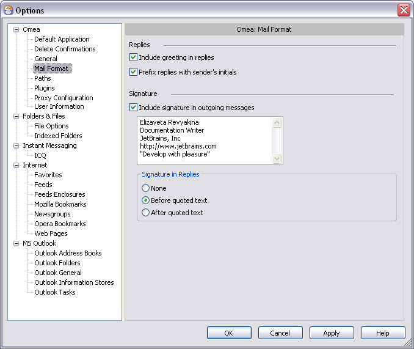
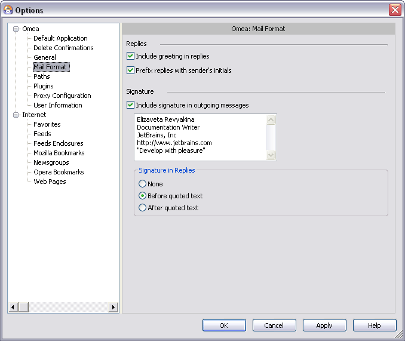

E-mail Format Options
You can access this option from the Main menu: Tools | Options: Omea: Mail Format
These options enable you to control formatting of e-mail messages and newsgroup articles (including replies) that you send from within Omea Reader Omea Pro.
 Mail format options in the Options Dialog
Replies
This group contains options that control what happens when you reply to e-mail messages or newsgroup articles from within Omea ReaderOmea Pro.
Include Greeting in Replies (checkbox)
When checked, a default greeting is automatically included at the beginning of your reply to any e-mail messages or newsgroup article.
Prefix Replies with Sender’s Initials (checkbox)
When checked, the initials of the sender of the item you are replying to are inserted before each line of the sender’s original message when it appears in a reply.
For example, suppose you are replying to a message from someone named Ron Downe. When this option is checked, the text of Ron’s message would look like this in your reply:
RD>
Having great time in Bahamas.
RD> Wish you were here.
RD>
Ron
If this option is not checked, it would look like this:
>Having
great time in Bahamas.
>Wish you were here.
>Ron
Signature
This group box enables you to specify a signature for Omea ReaderOmea Pro to include in e-mail messages and newsgroup articles you send or post using Omea ReaderOmea Pro. Note that the signature you define here will override any signature that you may have configured in MS Outlook.
When checked, Omea ReaderOmea Pro will insert the signature appearing in the box below this checkbox at the end of e-mail messages and newsgroup articles you create and send post using Omea ReaderOmea Pro. Enter text in the signature box as you want it to appear in new e-mail messages and newsgroup articles.
Signature in Replies
This group provides options to control how/whetherOmea ReaderOmea Pro includes your signature (defined in Signature) in replies you send to e-mail messages and newsgroup articles you read in Omea ReaderOmea Pro.
None (option button)
When selected, your signature is never included in replies.
Before Quoted Text (option button)
When selected, you signature is inserted in replies before any quoted text from the original message. For example:
Regards,
Bill Milader
Regional Sales Manager
>Having
great time in Bahamas.
>Wish you were here.
>Ron
After Quoted Text (option button)
When selected, you signature is inserted in replies after any quoted text from the original message. For example:
>Having
great time in Bahamas.
>Wish you were here.
>Ron
Regards,
Bill Milader
Regional Sales Manager